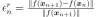

Dlib¶
- class Dlib(*args)¶
Base class for optimization solvers from the [dlib2009] library.
- Available constructors:
Dlib(algoName)
Dlib(problem, algoName)
- Parameters
- algoNamestr, optional
Identifier of the optimization method to use. Use
GetAlgorithmNames()to list available algorithms. Default is ‘BFGS’.- problem
OptimizationProblem, optional Optimization problem to solve. Default is an empty problem.
See also
Notes
The table below presents some properties of the available algorithms from dlib. Details on optimization methods are available on http://dlib.net/optimization.html
Algorithm
Description
Problem type support
Derivatives info
Constraint support
cg
Conjugate gradient
General
First derivative
Bounds
bfgs
BFGS
General
First derivative
Bounds
lbfgs
Limited memory BFGS
General
First derivative
Bounds
newton
Newton
General
First and second derivatives
Bounds
global
Global optimization
General
No derivative
Bounds needed
least_squares
Least squares (best for large residual)
Least squares
First derivative
None
least_squares_lm
Least squares LM (small residual)
Least squares
First derivative
None
trust_region
Trust region
General
No derivative
None
Derivatives are managed automatically by openturns, according to the available data (analytical formula or finite differences computation).
The global optimization algorithm requires finite fixed bounds for all input variables. In this strategy, the solver starts by refining a local extremum until no significant improvement is found. Then it tries to find better extrema in the rest of the domain defined by the user, until the maximum number of function evaluation is reached.
In least squares and trust region methods, the optimization process continues until the user criteria on absolute, relative and residual errors are satisfied, or until no significant improvement can be achieved.
Examples
Define an optimization problem to find the minimum of the Rosenbrock function:
>>> import openturns as ot >>> rosenbrock = ot.SymbolicFunction(['x1', 'x2'], ['(1-x1)^2+100*(x2-x1^2)^2']) >>> problem = ot.OptimizationProblem(rosenbrock) >>> cgSolver = ot.Dlib(problem,'cg') >>> cgSolver.setStartingPoint([0, 0]) >>> cgSolver.setMaximumResidualError(1.e-3) >>> cgSolver.setMaximumIterationNumber(100) >>> cgSolver.run() >>> result = cgSolver.getResult() >>> x_star = result.getOptimalPoint() >>> y_star = result.getOptimalValue()
Methods
List of dlib available optimization algorithms.
Accessor to the object's name.
getId()Accessor to the object's id.
Accessor to initialTrustRegionRadius parameter.
Accessor to maxLineSearchIterations parameter.
Accessor to maxSize parameter.
Accessor to maximum allowed absolute error.
Accessor to maximum allowed constraint error.
Accessor to maximum allowed number of evaluations.
Accessor to maximum allowed number of iterations.
Accessor to maximum allowed relative error.
Accessor to maximum allowed residual error.
getName()Accessor to the object's name.
Accessor to optimization problem.
Accessor to optimization result.
Accessor to the object's shadowed id.
Accessor to starting point.
Accessor to the verbosity flag.
Accessor to the object's visibility state.
Accessor to wolfeRho parameter.
Accessor to wolfeSigma parameter.
hasName()Test if the object is named.
Test if the object has a distinguishable name.
run()Performs the actual optimization process.
setInitialTrustRegionRadius(radius)Accessor to initialTrustRegionRadius parameter, sets the value to use during optimization process.
Accessor to maxLineSearchIterations parameter, sets the value to use during line search process.
setMaxSize(maxSize)Accessor to maxSize parameter, sets the value to use during optimization process.
setMaximumAbsoluteError(maximumAbsoluteError)Accessor to maximum allowed absolute error.
setMaximumConstraintError(maximumConstraintError)Accessor to maximum allowed constraint error.
Accessor to maximum allowed number of evaluations.
setMaximumIterationNumber(maximumIterationNumber)Accessor to maximum allowed number of iterations.
setMaximumRelativeError(maximumRelativeError)Accessor to maximum allowed relative error.
setMaximumResidualError(maximumResidualError)Accessor to maximum allowed residual error.
setName(name)Accessor to the object's name.
setProblem(problem)Accessor to optimization problem.
setProgressCallback(*args)Set up a progress callback.
setResult(result)Accessor to optimization result.
setShadowedId(id)Accessor to the object's shadowed id.
setStartingPoint(startingPoint)Accessor to starting point.
setStopCallback(*args)Set up a stop callback.
setVerbose(verbose)Accessor to the verbosity flag.
setVisibility(visible)Accessor to the object's visibility state.
setWolfeRho(wolfeRho)Accessor to wolfeRho parameter, sets the value to use during line search process.
setWolfeSigma(wolfeSigma)Accessor to wolfeSigma parameter, sets the value to use during line search process.
IsAvailable
getAlgorithmName
setAlgorithmName
- __init__(*args)¶
- static GetAlgorithmNames()¶
List of dlib available optimization algorithms.
- Returns
- algorithmNames
Description List of the names of available dlib search strategies.
- algorithmNames
- getClassName()¶
Accessor to the object’s name.
- Returns
- class_namestr
The object class name (object.__class__.__name__).
- getId()¶
Accessor to the object’s id.
- Returns
- idint
Internal unique identifier.
- getInitialTrustRegionRadius()¶
Accessor to initialTrustRegionRadius parameter. Relevant for trust region, least squares and least squares LM algorithms only.
- Returns
- initialTrustRegionRadiusfloat
The radius of the initial trust region used in optimization algorithms.
- getMaxLineSearchIterations()¶
Accessor to maxLineSearchIterations parameter. Relevant for algorithms CG, BFGS/LBFGS and Newton only.
- Returns
- maxLineSearchIterationsint
The maximum number of line search iterations to perform at each iteration of the optimization process. Relevant for algorithms CG, BFGS/LBFGS and Newton only.
- getMaxSize()¶
Accessor to maxSize parameter. Relevant for LBFGS algorithm only.
- Returns
- maxSizeint
The maximum amount of memory used during optimization process. 10 is a typical value for maxSize. Relevant for LBFGS algorithm only.
- getMaximumAbsoluteError()¶
Accessor to maximum allowed absolute error.
- Returns
- maximumAbsoluteErrorfloat
Maximum allowed absolute error, where the absolute error is defined by
 where
where  and
and  are two consecutive approximations of the optimum.
are two consecutive approximations of the optimum.
- getMaximumConstraintError()¶
Accessor to maximum allowed constraint error.
- Returns
- maximumConstraintErrorfloat
Maximum allowed constraint error, where the constraint error is defined by
 where is the current approximation of the optimum and
where is the current approximation of the optimum and  is the function that gathers all the equality and inequality constraints (violated values only)
is the function that gathers all the equality and inequality constraints (violated values only)
- getMaximumEvaluationNumber()¶
Accessor to maximum allowed number of evaluations.
- Returns
- Nint
Maximum allowed number of evaluations.
- getMaximumIterationNumber()¶
Accessor to maximum allowed number of iterations.
- Returns
- Nint
Maximum allowed number of iterations.
- getMaximumRelativeError()¶
Accessor to maximum allowed relative error.
- Returns
- maximumRelativeErrorfloat
Maximum allowed relative error, where the relative error is defined by
 if
if  , else
, else  .
.
- getMaximumResidualError()¶
Accessor to maximum allowed residual error.
- Returns
- maximumResidualErrorfloat
Maximum allowed residual error, where the residual error is defined by  if
 , else .
, else .
- getName()¶
Accessor to the object’s name.
- Returns
- namestr
The name of the object.
- getProblem()¶
Accessor to optimization problem.
- Returns
- problem
OptimizationProblem Optimization problem.
- problem
- getResult()¶
Accessor to optimization result.
- Returns
- result
OptimizationResult Result class.
- result
- getShadowedId()¶
Accessor to the object’s shadowed id.
- Returns
- idint
Internal unique identifier.
- getVerbose()¶
Accessor to the verbosity flag.
- Returns
- verbosebool
Verbosity flag state.
- getVisibility()¶
Accessor to the object’s visibility state.
- Returns
- visiblebool
Visibility flag.
- getWolfeRho()¶
Accessor to wolfeRho parameter. Relevant for algorithms CG, BFGS/LBFGS and Newton only.
- Returns
- wolfeRhofloat
The value of the wolfeRho parameter used in the optimization process.
- getWolfeSigma()¶
Accessor to wolfeSigma parameter. Relevant for algorithms CG, BFGS/LBFGS and Newton only.
- Returns
- wolfeSigmafloat
The value of the wolfeSigma parameter used in the optimization process.
- hasName()¶
Test if the object is named.
- Returns
- hasNamebool
True if the name is not empty.
- hasVisibleName()¶
Test if the object has a distinguishable name.
- Returns
- hasVisibleNamebool
True if the name is not empty and not the default one.
- run()¶
Performs the actual optimization process. Results are stored in the
OptimizationResultparameter of theDlibobject.
- setInitialTrustRegionRadius(radius)¶
Accessor to initialTrustRegionRadius parameter, sets the value to use during optimization process. Relevant for trust region, least squares and least squares LM algorithms only.
- Parameters
- initialTrustRegionRadiusfloat
The radius of the initial trust region to use in the optimization process.
- setMaxLineSearchIterations(maxLineSearchIterations)¶
Accessor to maxLineSearchIterations parameter, sets the value to use during line search process. Relevant for algorithms CG, BFGS/LBFGS and Newton only.
- Parameters
- maxLineSearchIterationsint
The value of the maxLineSearchIterations parameter to use in the optimization process.
- setMaxSize(maxSize)¶
Accessor to maxSize parameter, sets the value to use during optimization process. Relevant for LBFGS algorithm only.
- Parameters
- maxSizeint
The maximum amount of memory to use during optimization process. 10 is a typical value for maxSize. Relevant for LBFGS algorithm only.
- setMaximumAbsoluteError(maximumAbsoluteError)¶
Accessor to maximum allowed absolute error.
- Parameters
- maximumAbsoluteErrorfloat
Maximum allowed absolute error, where the absolute error is defined by
where
and are two consecutive approximations of the optimum.
- setMaximumConstraintError(maximumConstraintError)¶
Accessor to maximum allowed constraint error.
- Parameters
- maximumConstraintErrorfloat
Maximum allowed constraint error, where the constraint error is defined by
where is the current approximation of the optimum and is the function that gathers all the equality and inequality constraints (violated values only)
- setMaximumEvaluationNumber(maximumEvaluationNumber)¶
Accessor to maximum allowed number of evaluations.
- Parameters
- Nint
Maximum allowed number of evaluations.
- setMaximumIterationNumber(maximumIterationNumber)¶
Accessor to maximum allowed number of iterations.
- Parameters
- Nint
Maximum allowed number of iterations.
- setMaximumRelativeError(maximumRelativeError)¶
Accessor to maximum allowed relative error.
- Parameters
- maximumRelativeErrorfloat
Maximum allowed relative error, where the relative error is defined by
if , else .
- setMaximumResidualError(maximumResidualError)¶
Accessor to maximum allowed residual error.
- Parameters
- Maximum allowed residual error, where the residual error is defined by
if
, else .
- setName(name)¶
Accessor to the object’s name.
- Parameters
- namestr
The name of the object.
- setProblem(problem)¶
Accessor to optimization problem.
- Parameters
- problem
OptimizationProblem Optimization problem.
- problem
- setProgressCallback(*args)¶
Set up a progress callback.
Can be used to programmatically report the progress of an optimization.
- Parameters
- callbackcallable
Takes a float as argument as percentage of progress.
Examples
>>> import sys >>> import openturns as ot >>> rosenbrock = ot.SymbolicFunction(['x1', 'x2'], ['(1-x1)^2+100*(x2-x1^2)^2']) >>> problem = ot.OptimizationProblem(rosenbrock) >>> solver = ot.OptimizationAlgorithm(problem) >>> solver.setStartingPoint([0, 0]) >>> solver.setMaximumResidualError(1.e-3) >>> solver.setMaximumEvaluationNumber(10000) >>> def report_progress(progress): ... sys.stderr.write('-- progress=' + str(progress) + '%\n') >>> solver.setProgressCallback(report_progress) >>> solver.run()
- setResult(result)¶
Accessor to optimization result.
- Parameters
- result
OptimizationResult Result class.
- result
- setShadowedId(id)¶
Accessor to the object’s shadowed id.
- Parameters
- idint
Internal unique identifier.
- setStartingPoint(startingPoint)¶
Accessor to starting point.
- Parameters
- startingPoint
Point Starting point.
- startingPoint
- setStopCallback(*args)¶
Set up a stop callback.
Can be used to programmatically stop an optimization.
- Parameters
- callbackcallable
Returns an int deciding whether to stop or continue.
Examples
>>> import openturns as ot >>> rosenbrock = ot.SymbolicFunction(['x1', 'x2'], ['(1-x1)^2+100*(x2-x1^2)^2']) >>> problem = ot.OptimizationProblem(rosenbrock) >>> solver = ot.OptimizationAlgorithm(problem) >>> solver.setStartingPoint([0, 0]) >>> solver.setMaximumResidualError(1.e-3) >>> solver.setMaximumEvaluationNumber(10000) >>> def ask_stop(): ... return True >>> solver.setStopCallback(ask_stop) >>> solver.run()
- setVerbose(verbose)¶
Accessor to the verbosity flag.
- Parameters
- verbosebool
Verbosity flag state.
- setVisibility(visible)¶
Accessor to the object’s visibility state.
- Parameters
- visiblebool
Visibility flag.
- setWolfeRho(wolfeRho)¶
Accessor to wolfeRho parameter, sets the value to use during line search process. Relevant for algorithms CG, BFGS/LBFGS and Newton only.
- Parameters
- wolfeRhofloat
The value of the wolfeRho parameter to use in the optimization process.
- setWolfeSigma(wolfeSigma)¶
Accessor to wolfeSigma parameter, sets the value to use during line search process. Relevant for algorithms CG, BFGS/LBFGS and Newton only.
- Parameters
- wolfeSigmafloat
The value of the wolfeSigma parameter to use in the optimization process.